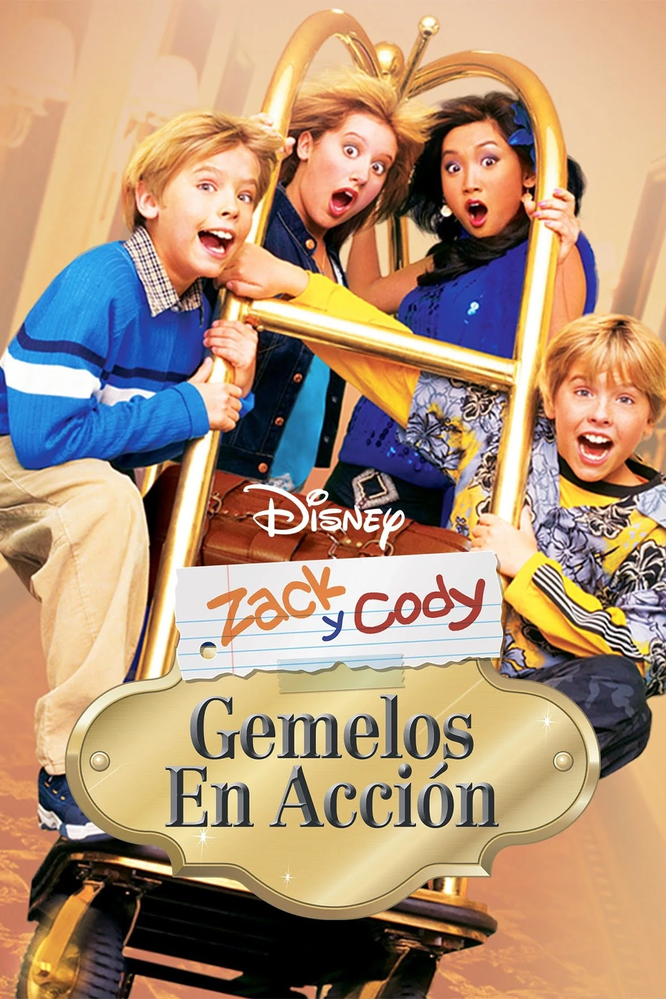

Series de Ficcion
|  |
|---|
| Zac y Cody |
 |
| 10 temporadas en Disney+ |
| Es una serie de televisión creada por Danny Kallis y Jim Geoghan. La serie se estrenó por primera vez en Disney Channel el 18 de marzo de 2005, con 4 millones de espectadores, convirtiéndose en el estreno más exitoso para Disney Channel en 2005. Fue uno de sus primeros cinco shows disponibles en la iTunes Store. La serie fue nominada para un premio Emmy tres veces y fue nominada para un Nickelodeon Kids' Choice Awards tres veces. |
 |
|---|
| Los Simpson |
 |
| 34 temporadas en Fox |
| The Simpsons (en español, Los Simpson) es una serie estadounidense de animación, en formato de comedia de situación, creada por Matt Groening para Fox Broadcasting Company y emitida en varios países del mundo. La serie es una sátira hacia la sociedad estadounidense que narra la vida y el día a día de una familia de clase media de ese país (cuyos miembros son Homer, Marge, Bart, Lisa y Maggie Simpson) que vive en un pueblo ficticio llamado Springfield. |